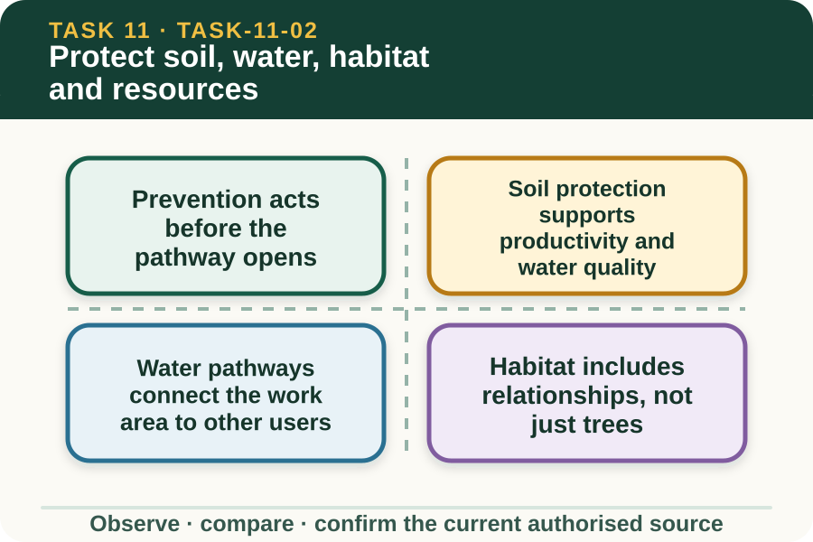

Classroom presentation · 8 slides
Protect soil, water, habitat and resources
Task 11 · 1 of 8
Protect soil, water, habitat and resources
Compare prevention and control choices using a fictional farm-work scenario.

Speaker notes
Teaching move (web-deck purpose): Use the module visual and the fictional worked example to move students from observation to a source-led decision. Ask students to name the evidence, the authority gap and the next safe communication step. Misconception and help: Compare preventing movement with trying to address its effects later. Earlier in the chain is usually easier to control. Applied action: Compare two fictional prevention options. Use a privacy-safe farm scene and teacher-supplied option cards. Complete a comparison of pathway, receptor, likely benefit, limitation and monitoring question. Do not write a property procedure. Boundary: This supplementary learning draws on mapped AHCWRK211 concepts. Current signed TAS and RTO documents control cohort delivery, assessment and competency decisions; current workplace procedures, supervision and authorised sources control real work. [Sources] - Source basis: AHCWRK211 Release 1 environmental practice and improvement requirements, the NESA Sustainability focus area and authorised teacher-posted sustainability notes. Property-specific soil, water, habitat and waste controls remain authorised locally. - Visual visual-task-11-02: Generated locally from accepted Stage 05 module headings; no external image copied. - Course visual manifest: work/pi/visuals/visual-manifest.json
Task 11 · 2 of 8
Map the learning
- Prevention acts before the pathway opens
- Soil protection supports productivity and water quality
- Water pathways connect the work area to other users
Retrieve: Why is prevention often stronger than responding after movement occurs?
Speaker notes
Teaching move (learning map): Use the module visual and the fictional worked example to move students from observation to a source-led decision. Ask students to name the evidence, the authority gap and the next safe communication step. Misconception and help: Compare preventing movement with trying to address its effects later. Earlier in the chain is usually easier to control. Applied action: Compare two fictional prevention options. Use a privacy-safe farm scene and teacher-supplied option cards. Complete a comparison of pathway, receptor, likely benefit, limitation and monitoring question. Do not write a property procedure. Boundary: This supplementary learning draws on mapped AHCWRK211 concepts. Current signed TAS and RTO documents control cohort delivery, assessment and competency decisions; current workplace procedures, supervision and authorised sources control real work. [Sources] - Source basis: AHCWRK211 Release 1 environmental practice and improvement requirements, the NESA Sustainability focus area and authorised teacher-posted sustainability notes. Property-specific soil, water, habitat and waste controls remain authorised locally. - Visual visual-task-11-02: Generated locally from accepted Stage 05 module headings; no external image copied. - Course visual manifest: work/pi/visuals/visual-manifest.json
Task 11 · 3 of 8
Notice the evidence
Prevention acts before the pathway opens
Prevention changes the source, location, timing or exposure before environmental harm develops. It is often more reliable than trying to recover material or restore a receptor after movement has occurred.
A learner can identify prevention opportunities in a fictional plan, but the authorised workplace decides which control is suitable. Site-specific soil, water, habitat, waste and land-use requirements cannot be generated safely from a generic scenario.
Soil protection supports productivity and water quality
Soil structure, ground cover and stable surfaces affect infiltration, erosion, compaction and the movement of sediment. Work timing, traffic and disturbance can change these conditions even when the immediate task appears efficient.
Good planning asks what part of the soil system is exposed and what evidence will be checked later. It avoids assuming that one visible surface represents the whole profile or catchment.
Speaker notes
Teaching move (theory idea 1): Use the module visual and the fictional worked example to move students from observation to a source-led decision. Ask students to name the evidence, the authority gap and the next safe communication step. Misconception and help: Compare preventing movement with trying to address its effects later. Earlier in the chain is usually easier to control. Applied action: Compare two fictional prevention options. Use a privacy-safe farm scene and teacher-supplied option cards. Complete a comparison of pathway, receptor, likely benefit, limitation and monitoring question. Do not write a property procedure. Boundary: This supplementary learning draws on mapped AHCWRK211 concepts. Current signed TAS and RTO documents control cohort delivery, assessment and competency decisions; current workplace procedures, supervision and authorised sources control real work. [Sources] - Source basis: AHCWRK211 Release 1 environmental practice and improvement requirements, the NESA Sustainability focus area and authorised teacher-posted sustainability notes. Property-specific soil, water, habitat and waste controls remain authorised locally. - Visual visual-task-11-02: Generated locally from accepted Stage 05 module headings; no external image copied. - Course visual manifest: work/pi/visuals/visual-manifest.json
Task 11 · 4 of 8
Use the source boundary
Water pathways connect the work area to other users
Water can link a small work area to a dam, drainage line, wetland, groundwater system or downstream user. The planning map should show likely flow direction and sensitive receptors without publishing real private details.
Water appearance can provide observations such as colour or turbidity, but it does not identify a substance or cause by itself. Any real sampling, interpretation and response must follow authorised sources.
Habitat includes relationships, not just trees
Habitat provides food, shelter, movement routes and breeding opportunities for organisms. Removing or disturbing one feature can affect connectivity even when other vegetation remains nearby.
A fictional comparison should consider timing, area, edge effects, noise, light and movement as possible influences. The learner describes the interaction and refers any ecological or legal judgement.
Speaker notes
Teaching move (theory idea 2): Use the module visual and the fictional worked example to move students from observation to a source-led decision. Ask students to name the evidence, the authority gap and the next safe communication step. Misconception and help: Compare preventing movement with trying to address its effects later. Earlier in the chain is usually easier to control. Applied action: Compare two fictional prevention options. Use a privacy-safe farm scene and teacher-supplied option cards. Complete a comparison of pathway, receptor, likely benefit, limitation and monitoring question. Do not write a property procedure. Boundary: This supplementary learning draws on mapped AHCWRK211 concepts. Current signed TAS and RTO documents control cohort delivery, assessment and competency decisions; current workplace procedures, supervision and authorised sources control real work. [Sources] - Source basis: AHCWRK211 Release 1 environmental practice and improvement requirements, the NESA Sustainability focus area and authorised teacher-posted sustainability notes. Property-specific soil, water, habitat and waste controls remain authorised locally. - Visual visual-task-11-02: Generated locally from accepted Stage 05 module headings; no external image copied. - Course visual manifest: work/pi/visuals/visual-manifest.json
Task 11 · 5 of 8
Connect evidence to action
Treat waste as a resource-flow question
Waste prevention begins by asking why excess material entered the task. Reuse, recovery and recycling can be useful where the current workplace system accepts the material, while some items require controlled handling that the public site must not describe.
Do not assume that a material is recyclable because it looks similar to another item. Identify it through the workplace source and record the quantity and decision point needed for the authorised person.
Compare controls by effectiveness and trade-offs
A control comparison should state the pathway addressed, evidence of likely effectiveness, resources required, limitations, possible unintended effects and how performance will be checked. An attractive idea can still shift the problem elsewhere.
The strongest recommendation stays within the learner's work area and authority. It names what the supervisor should review rather than presenting a website-generated change as approved workplace practice.
Speaker notes
Teaching move (theory idea 3): Use the module visual and the fictional worked example to move students from observation to a source-led decision. Ask students to name the evidence, the authority gap and the next safe communication step. Misconception and help: Compare preventing movement with trying to address its effects later. Earlier in the chain is usually easier to control. Applied action: Compare two fictional prevention options. Use a privacy-safe farm scene and teacher-supplied option cards. Complete a comparison of pathway, receptor, likely benefit, limitation and monitoring question. Do not write a property procedure. Boundary: This supplementary learning draws on mapped AHCWRK211 concepts. Current signed TAS and RTO documents control cohort delivery, assessment and competency decisions; current workplace procedures, supervision and authorised sources control real work. [Sources] - Source basis: AHCWRK211 Release 1 environmental practice and improvement requirements, the NESA Sustainability focus area and authorised teacher-posted sustainability notes. Property-specific soil, water, habitat and waste controls remain authorised locally. - Visual visual-task-11-02: Generated locally from accepted Stage 05 module headings; no external image copied. - Course visual manifest: work/pi/visuals/visual-manifest.json
Task 11 · 6 of 8
Retrieve and check
Why is prevention often stronger than responding after movement occurs?
- It can remove or reduce the source–pathway connection before a receptor is affected.
- It guarantees that no monitoring is needed.
- It lets a learner ignore the workplace plan.
Teacher reveal
Correct. Prevention acts earlier in the environmental chain.
Earlier in the chain is usually easier to control.
Speaker notes
Teaching move (retrieval): Use the module visual and the fictional worked example to move students from observation to a source-led decision. Ask students to name the evidence, the authority gap and the next safe communication step. Misconception and help: Compare preventing movement with trying to address its effects later. Earlier in the chain is usually easier to control. Applied action: Compare two fictional prevention options. Use a privacy-safe farm scene and teacher-supplied option cards. Complete a comparison of pathway, receptor, likely benefit, limitation and monitoring question. Do not write a property procedure. Boundary: This supplementary learning draws on mapped AHCWRK211 concepts. Current signed TAS and RTO documents control cohort delivery, assessment and competency decisions; current workplace procedures, supervision and authorised sources control real work. [Sources] - Source basis: AHCWRK211 Release 1 environmental practice and improvement requirements, the NESA Sustainability focus area and authorised teacher-posted sustainability notes. Property-specific soil, water, habitat and waste controls remain authorised locally. - Visual visual-task-11-02: Generated locally from accepted Stage 05 module headings; no external image copied. - Course visual manifest: work/pi/visuals/visual-manifest.json Use option-specific feedback after the learner commits to an answer.
Task 11 · 7 of 8
Construct a source-led response
Compare two prevention-focused options for a fictional farm scenario affecting soil, water or habitat. Explain the pathway addressed, limitation, trade-off and authorised performance check.
- The fictional work activity creates the possible pathway…
- Option A would address it by… but may…
- Option B would address it by… but may…
- The evidence needed to compare them is…
- I would recommend the supervisor review…
- The authorised performance check would need to confirm…
Success criteria
- Connects each option to a specific pathway
- Identifies limitations and unintended effects
- Prefers prevention where evidence supports it
- Leaves site-specific approval and procedures with the supervisor
Speaker notes
Teaching move (guided written response): Use the module visual and the fictional worked example to move students from observation to a source-led decision. Ask students to name the evidence, the authority gap and the next safe communication step. Misconception and help: Compare preventing movement with trying to address its effects later. Earlier in the chain is usually easier to control. Applied action: Compare two fictional prevention options. Use a privacy-safe farm scene and teacher-supplied option cards. Complete a comparison of pathway, receptor, likely benefit, limitation and monitoring question. Do not write a property procedure. Boundary: This supplementary learning draws on mapped AHCWRK211 concepts. Current signed TAS and RTO documents control cohort delivery, assessment and competency decisions; current workplace procedures, supervision and authorised sources control real work. [Sources] - Source basis: AHCWRK211 Release 1 environmental practice and improvement requirements, the NESA Sustainability focus area and authorised teacher-posted sustainability notes. Property-specific soil, water, habitat and waste controls remain authorised locally. - Visual visual-task-11-02: Generated locally from accepted Stage 05 module headings; no external image copied. - Course visual manifest: work/pi/visuals/visual-manifest.json
Task 11 · 8 of 8
Close the loop
Compare two fictional prevention options
Use a privacy-safe farm scene and teacher-supplied option cards. Complete a comparison of pathway, receptor, likely benefit, limitation and monitoring question. Do not write a property procedure.
- Name the strongest evidence in the scenario.
- Explain the decision or referral it supports.
- State which current source or authorised person controls real work.
Boundary: This supplementary learning draws on mapped AHCWRK211 concepts. Current signed TAS and RTO documents control cohort delivery, assessment and competency decisions; current workplace procedures, supervision and authorised sources control real work.
Speaker notes
Teaching move (exit and application): Use the module visual and the fictional worked example to move students from observation to a source-led decision. Ask students to name the evidence, the authority gap and the next safe communication step. Misconception and help: Compare preventing movement with trying to address its effects later. Earlier in the chain is usually easier to control. Applied action: Compare two fictional prevention options. Use a privacy-safe farm scene and teacher-supplied option cards. Complete a comparison of pathway, receptor, likely benefit, limitation and monitoring question. Do not write a property procedure. Boundary: This supplementary learning draws on mapped AHCWRK211 concepts. Current signed TAS and RTO documents control cohort delivery, assessment and competency decisions; current workplace procedures, supervision and authorised sources control real work. [Sources] - Source basis: AHCWRK211 Release 1 environmental practice and improvement requirements, the NESA Sustainability focus area and authorised teacher-posted sustainability notes. Property-specific soil, water, habitat and waste controls remain authorised locally. - Visual visual-task-11-02: Generated locally from accepted Stage 05 module headings; no external image copied. - Course visual manifest: work/pi/visuals/visual-manifest.json